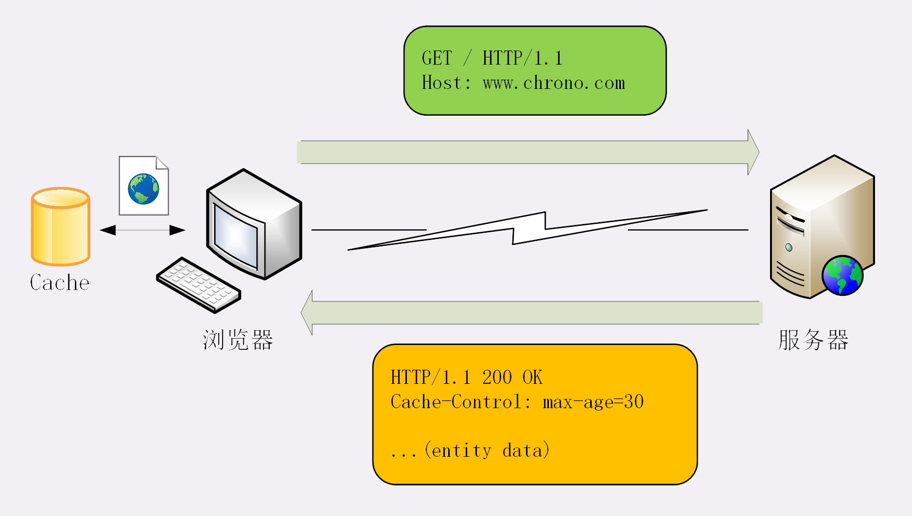
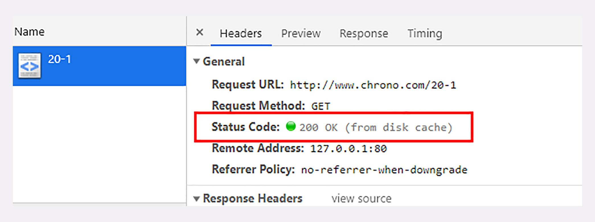
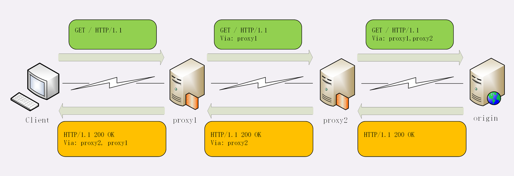

透视HTTP协议
Table of Contents
- 名词解释
- 01 | 时势与英雄：HTTP 的前世今生
- 02 | HTTP 是什么？HTTP 又不是什么？
- 03 | HTTP世界全览（上）：与HTTP相关的各种概念
- 04 | HTTP世界全览（下）：与HTTP相关的各种协议
- 05 | 常说的“四层”和“七层”到底是什么？“五层”“六层”哪去了？
- 06 | 域名里有哪些门道？
- 08 | 键入网址再按下回车，后面究竟发生了什么？
- 09 | HTTP报文是什么样子的？
- 10 | 应该如何理解请求方法?
- 11 | 你能写出正确的网址吗？
- 12 | 响应状态码该怎么用？
- 13 | HTTP有哪些特点？
- 14 | HTTP有哪些优点？又有哪些缺点？
- 15 | 海纳百川：HTTP的实体数据
- 16 | 把大象装进冰箱：HTTP传输大文件的方法
- 17 | 排队也要讲效率：HTTP的连接管理
- 18 | 四通八达：HTTP的重定向和跳转
- 19 | 让我知道你是谁：HTTP的Cookie机制
- 20 | 生鲜速递：HTTP的缓存控制
- 21 | 良心中间商：HTTP的代理服务
- 22 | 冷链周转：HTTP的缓存代理
名词解释
- HTTP：HyperText Transfer Protocol 超文本传输协议
- CDN: Content Delivery Network 内容分发网络
- IP 协议: Internet Protocol
- TCP 协议：Transmission Control Protocol
- DNS: Domain Name System 域名系统，域名”（Domain Name）又称为“主机名”（Host）
- URI： Uniform Resource Identifier，统一资源标识符，唯一地标记互联网上资源
- URL：Uniform Resource Locator， 统一资源定位符，URI 的一个子集
- HTTPS：HTTP over SSL/TLS
- SSL： Secure Socket Layer，当发展到 3.0 时被标准化，改名为 TLS，即“Transport Layer Security”，但由于历史的原因还是有很多人称之为 SSL/TLS，或者直接简称为 SSL。
- OSI: Open System Interconnection Reference Model, 开放式系统互联通信参考模型
- MIME： Multipurpose Internet Mail Extensions， 多用途互联网邮件扩展，让电子邮件可以发送 ASCII 码以外的任意数据
01 | 时势与英雄：HTTP 的前世今生
- HTTP 协议始于三十年前蒂姆·伯纳斯 - 李的一篇论文
- HTTP/0.9 是个简单的文本协议，只能获取文本资源
- HTTP/1.0 确立了大部分现在使用的技术，但它不是正式标准
- HTTP/1.1 是目前互联网上使用最广泛的协议，功能也非常完善
- HTTP/2 基于 Google 的 SPDY 协议，注重性能改善，但还未普及
- HTTP/3 基于 Google 的 QUIC 协议，是将来的发展方向。
02 | HTTP 是什么？HTTP 又不是什么？
HTTP 是什么？
超文本传输协议 ，它可以拆成三个部分，分别是： 超文本 、 传输 和 协议 。

- 协议：HTTP 是一个用在计算机世界里的协议。它使用计算机能够理解的语言确立了一种计算机之间交流通信的规范，以及相关的各种控制和错误处理方式。
- 传输：HTTP 是一个在计算机世界里专门用来在两点之间传输数据的约定和规范。
- 超文本：HTTP 是一个在计算机世界里专门在两点之间传输文字、图片、音频、视频等超文本数据的约定和规范。
我们可以把 HTTP 定义为“与 HTTP 协议相关的所有应用层技术的总和”。
03 | HTTP世界全览（上）：与HTTP相关的各种概念
- 互联网上绝大部分资源都使用 HTTP 协议传输
- 浏览器是 HTTP 协议里的请求方，即 User Agent
- 服务器是 HTTP 协议里的应答方，常用的有 Apache 和 Nginx
- CDN 位于浏览器和服务器之间，主要起到缓存加速的作用
- 爬虫是另一类 User Agent，是自动访问网络资源的程序
04 | HTTP世界全览（下）：与HTTP相关的各种协议
- TCP/IP 是网络世界最常用的协议，HTTP 通常运行在 TCP/IP 提供的可靠传输基础上
- DNS 域名是 IP 地址的等价替代，需要用域名解析实现到 IP 地址的映射
- URI 是用来标记互联网上资源的一个名字，由“协议名 + 主机名 + 路径”构成，俗称 URL
- HTTPS 相当于“HTTP+SSL/TLS+TCP/IP”，为 HTTP 套了一个安全的外壳
- 代理是 HTTP 传输过程中的“中转站”，可以实现缓存加速、负载均衡等功能
05 | 常说的“四层”和“七层”到底是什么？“五层”“六层”哪去了？
四层模型

- linker layer: 链接层，负责在以太网、WiFi 这样的底层网络上发送原始数据包，工作在网卡这个层次，使用 MAC 地址来标记网络上的设备，所以有时候也叫 MAC 层。
- internet layer: 网际层或者网络互连层，IP 协议就处在这一层。因为 IP 协议定义了“IP 地址”的概念，所以就可以在“链接层”的基础上，用 IP 地址取代 MAC 地址，把许许多多的局域网、广域网连接成一个虚拟的巨大网络，在这个网络里找设备时只要把 IP 地址再“翻译”成 MAC 地址就可以了。
- transport layer: 传输层，这个层次协议的职责是保证数据在 IP 地址标记的两点之间“可靠”地传输，是 TCP 协议工作的层次，另外还有它的一个“小伙伴”UDP。
- application layer：应用层，有各种面向具体应用的协议。例如 Telnet、SSH、FTP、SMTP 等等，当然还有 HTTP。 DNS, CDN 都工作在应用层
七层模型
OSI，全称是“开放式系统互联通信参考模型”（Open System Interconnection Reference Model）

- 第一层：物理层，网络的物理形式，例如电缆、光纤、网卡、集线器等等
- 第二层：数据链路层，它基本相当于 TCP/IP 的链接层
- 第三层：网络层，相当于 TCP/IP 里的网际层
- 第四层：传输层，相当于 TCP/IP 里的传输层
- 第五层：会话层，维护网络中的连接状态，即保持会话和同步
- 第六层：表示层，把数据转换为合适、可理解的语法和语义
- 第七层：应用层，面向具体的应用传输数据
二层转发，三层路由
二层转发就意味着是在数据链路层（Data Link Layer）做的转发，基于 MAC 地址，通常指的是交换机；三层路由意味着是在网络层（Network Layer）做的转发，通常指的是路由器（当然也有路由功能的交换机）；当数据传输到网络层，路由器会检查目的 IP 是否与自己处于同一网段，是则进行二层转发即请求目的主机的 MAC 地址，否则进行三层转发即进入路由的递归查找。
06 | 域名里有哪些门道？
域名结构 ：主机.二级域名.顶级域名
域名解析

Dns 的核心系统是一个三层的树状、分布式服务，基本对应域名的结构：
- 根域名服务器（Root DNS Server）：管理顶级域名服务器，返回“com”“net”“cn”等顶级域名服务器的 IP 地址
- 顶级域名服务器（Top-level DNS Server）：管理各自域名下的权威域名服务器，比如 com 顶级域名服务器可以返回 apple.com 域名服务器的 IP 地
- 权威域名服务器（Authoritative DNS Server）：管理自己域名下主机的 IP 地址，比如 apple.com 权威域名服务器可以返回 www.apple.com 的 IP 地址
全世界共有 13 组根域名服务器，虽然又有数百台镜像，但为了减轻域名解析的压力，采用的基本思路是 缓存 。
- 浏览器缓存
- 操作系统缓存
- host 文件
- 网络运营商自建 DNS 服务器，“野生”服务器被称为“非权威域名服务器”，比较知名的 DNS 有 Google 的“8.8.8.8”，Microsoft 的“4.2.2.1”
那么浏览器里输入 www.apple.com，具体的 DNS 解析过程是怎样的呢？

浏览器缓存->操作系统dnscache->hosts文件->非权威域名服务器->根域名服务器->顶级域名服务器->二级域名服务器->权威域名服务器
- 其中非权威域名服务器还包括LDNS（企业内网DNS服务器），三大营运商DNS，谷歌公开的DNS，微软公开的DNS等
- 操作系统 dnscache clinet 服务进行DNS缓存的（任务管理器里面可以看到一个dns客户端进程)
域名新玩法
- 重定向：当主机有情况需要下线、迁移时，可以更改 DNS 记录，让域名指向其他的机器
- 名字服务器：搭建一个在内部使用的 DNS，作为名字服务器
- 负载均衡
- 因为域名解析可以返回多个 IP 地址，所以一个域名可以对应多台主机，客户端收到多个 IP 地址后，就可以自己使用轮询算法依次向服务器发起请求，实现负载均衡
- 域名解析可以配置内部的策略，返回离客户端最近的主机，或者返回当前服务质量最好的主机，这样在 DNS 端把请求分发到不同的服务器，实现负载均衡
- 恶意玩法：域名屏蔽、域名劫持
08 | 键入网址再按下回车，后面究竟发生了什么？
09 | HTTP报文是什么样子的？
报文结构

HTTP 协议的请求报文和响应报文的结构基本相同，由三大部分组成：
- 起始行（start line）：描述请求或响应的基本信息
- 头部字段集合（header）：使用 key-value 形式更详细地说明报文
- 消息正文（entity）：实际传输的数据，它不一定是纯文本，可以是图片、视频等二进制数据
其中前两部分起始行和头部字段经常又合称为“请求头”或“响应头”，消息正文又称为“实体”，但与“header”对应，很多时候就直接称为“body”。
HTTP 协议必须有 header，但可以没有 body，header 之后必须要有一个“空行”，即 CRLF ，十六进制的OD0A
报文里的 header 就是“大头儿子”的“大头”，空行就是他的“脖子”，而后面的 body 部分就是他的身体了
请求行

请求行（request line）简要描述了 客户端想要如何操作服务器端的资源 ，由三部分组成：
- 请求方法：动词，如 GET/POST，表示对资源的操作
- 请求目标：通常是 URI，表示请求方法要操作的资源
- 版本号：HTTP 协议版本
这三部分通常用空格隔开，最后用 CRLF 表示结束
状态行

状态行（status line）指响应报文里的起始行，意思为 服务器响应的状态 ，由三部分组成：
- 版本号：HTTP 协议版本
- 状态码：三位数，如 200/500
- 原因：作为数字状态码的补充，更详细的文字解释
头部字段
*请求行或状态行再加上头部字段集合就构成了 HTTP 报文里完整的请求头或响应头*，请求头和响应头的结构是基本一样的，唯一的区别是起始行。


头部字段是 key-value 的形式，用 : 隔开，最后用 CRLF 换行表示字段结束。HTTP 头字段非常灵活，可以使用标准里的字段，也可以自定义字段，但需要注意以下几点：
- 字段名不区分大小写，但首字母大写的可读性更好
- 字段名里不允许出现空格，可以使用连字符“-”，但不能使用下划线“”
- 字段名后面必须紧接着“:”，不能有空格，而“:”后的字段值前可以有多个空格，=但绝大多数情况下都只使用一个空格呢，这样可以减少要传输的字节，节省资源=
- 字段的顺序是没有意义的
- 字段原则上不能重复，除非这个字段本身的语义允许，例如 Set-Cookie
如果拼 HTTP 报文的时候，在头字段后多加了一个 CRLF，导致出现了一个空行，会发生什么？
答：会被当做body处理。
常用头字段
HTTP 协议规定了非常多的头部字段，实现各种各样的功能，但基本上可以分为四大类：
- 通用字段：在请求头和响应头里都可以出现
- 请求字段：仅能出现在请求头里，进一步说明请求信息或者额外的附加条件
- 响应字段：仅能出现在响应头里，补充说明响应报文的信息
- 实体字段：它实际上属于通用字段，但专门描述 body 的额外信息
Host 字段，它属于请求字段，只能出现在请求头里，标记虚拟主机名。它同时也是唯一一个 HTTP/1.1 规范里要求 必须出现 的字段，也就是说，如果请求头里没有 Host，那这就是一个错误的报文。
User-Agent 是请求字段，只出现在请求头里。使用一个字符串来描述发起 HTTP 请求的客户端。
Date 字段是一个通用字段，但通常出现在响应头里，表示 HTTP 报文创建的时间，客户端可以使用这个时间再搭配其他字段决定缓存策略
Server 字段是响应字段，只能出现在响应头里。它告诉客户端当前正在提供 Web 服务的软件名称和版本号。Server 字段也不是必须要出现的，因为这会把服务器的一部分信息暴露给外界。
实体字段里要说的一个是 Content-Length ，它表示报文里 body 的长度，也就是请求头或响应头空行后面数据的长度。
10 | 应该如何理解请求方法?
标准请求方法
目前 HTTP/1.1 规定了八种方法，单词都必须是大写的形式：

GET/HEAD
GET 含义是请求 从服务器获取资源 ，以是静态的文本、页面、图片、视频，也可以是由 PHP、Java 动态生成的页面或者其他格式的数据。GET 方法虽然动作简单，但可以搭配 URI 和其他头字段能实现对资源更精细的操作。如在 URI 后使用“#”，就可以在获取页面后直接定位到某个标签所在的位置；使用 If-Modified-Since 字段就变成了“有条件的请求”，仅当资源被修改时才会执行获取动作；使用 Range 字段就是“范围请求”，只获取资源的一部分数据。
HEAD 方法与 GET 方法类似，也是请求从服务器获取资源，服务器的处理机制也是一样的，但服务器不会返回请求的实体数据，只会传回响应头，也就是资源的“元信息”。HEAD 方法可以看做是 GET 方法的一个“简化版”或者“轻量版”。因为它的响应头与 GET 完全相同，所以可以用在很多并不真正需要资源的场合，避免传输 body 数据的浪费，比如检查一个文件是否存在。
POST/PUT
POST 和 PUT 向 URI 指定的资源提交数据，数据就放在报文的 body 里。PUT 的作用与 POST 类似，也可以向服务器提交数据，但与 POST 存在微妙的不同，通常 POST 表示的是“新建”“create”的含义，而 PUT 则是“修改”“update”的含义。
其他方法
DELETE 方法指示服务器删除资源。
CONNECT 要求服务器为客户端和另一台远程服务器建立一条特殊的连接隧道，这时 Web 服务器在中间充当了代理的角色。
OPTIONS 方法要求服务器列出可对资源实行的操作方法。
TRACE 方法多用于对 HTTP 链路的测试或诊断。
扩展方法
虽然 HTTP/1.1 里规定了八种请求方法，但它并没有限制我们只能用这八种方法，这也体现了 HTTP 协议良好的扩展性，我们可以任意添加请求动作，只要请求方和响应方都能理解就行
安全与幂等
所谓的“安全”是指请求方法不会“破坏”服务器上的资源，即不会对服务器上的资源造成实质的修改。按照这个定义，只有 GET 和 HEAD 方法是“安全”的，因为它们是“只读”操作。
所谓的“幂等”实际上是一个数学用语，被借用到了 HTTP 协议里，意思是多次执行相同的操作，结果也都是相同的，即多次“幂”后结果“相等”。
GET 和 HEAD 既是安全的也是幂等的，DELETE 可以多次删除同一个资源，效果都是“资源不存在”，所以也是幂等的。
按照 RFC 里的语义，POST 是“新增或提交数据”，多次提交数据会创建多个资源，所以不是幂等的；而 PUT 是“替换或更新数据”，所以是幂等的。
11 | 你能写出正确的网址吗？
URI - 统一资源标识符（Uniform Resource Identifier）包含 URL —— 统一资源定位符（Uniform Resource Locator）和 URN，在 HTTP 世界里用的网址实际上是 URL。
URI 格式
URI 本质上是一个字符串，这个字符串的作用是唯一地标记资源的位置或者名字。通常由 由 scheme、host:port、path 和 query 四个部分组成：

- scheme：方案名或者协议名，表示资源应该使用哪种协议
- scheme 之后，必须是三个特定的字符“://”，它把 scheme 和后面的部分隔开，URI 的创造者蒂姆·伯纳斯 - 李也曾经私下承认“://”并非必要，当初有些“过于草率”了
- authority： 在“://”之后，是被称为“authority”的部分，表示资源所在的主机名，通常的形式是“host:port”；端口号有时可以省略，浏览器等客户端会依据 scheme 使用默认的端口号，例如 HTTP 的默认端口号是 80，HTTPS 的默认端口号是 443。
- path：早期互联网上的计算机多是 UNIX 系统，所以采用了 UNIX 的“/”风格； URI 的 path 部分必须以“/”开始，也就是必须包含“/”，“/”不属于前面 的 authority
- query: 仅用“协议名 + 主机名 + 路径”的方式是无法适应这些场景的，所以 URI 后面还有一个“query”部分，它在 path 之后，用一个“?”开始，但不包含“?”，表示对资源附加的额外要求，格式为多个“key=value”的字符
客户端和服务器看到的 URI 是不一样的。客户端看到的必须是完整的 URI，使用特定的协议去连接特定的主机，而服务器看到的只是报文请求行里被删除了协议名和主机名的 URI。
URI 完整格式

- 协议名之后、主机名之前的身份信息“user:passwd@”，表示登录主机时的用户名和密码，存在严重的安全隐患，经不推荐使用这种形式了（RFC7230）
- 询参数后的片段标识符“#fragment”，它是 URI 所定位的资源内部的一个“锚点”或者说是“标签”，浏览器可以在获取资源后直接跳转到它指示的位置
但片段标识符仅能由浏览器这样的客户端使用，服务器是看不到的。浏览器永远不会把带“#fragment”的 URI 发送给服务器，服务器也永远不会用这种方式去处理资源的片段。
URI 编码
URI 引入了编码机制，对于 ASCII 码以外的字符集和特殊字符做一个特殊的操作，把它们转换成与 URI 语义不冲突的形式。这在 RFC 规范里称为“escape”和“unescape”，俗称“转义”。转义的规则为： 把非 ASCII 码或特殊字符转换成十六进制字节值，然后前面再加上一个“%” 。
查询参数和头字段在格式上都是 key-value 的结构，那么什么情况下放在查询参数中，什么情况下放在头字段中？
两者的作用域和时效性不同：查询参数是与 URI 关联在一起，是长期的、稳定的；头字段是与一次 HTTP 请求关联的，针对的是本次请求报文，是短期的、临时的。
比如要查询商品列表，控制页码 page 和每页的数量 count，是和商品属性相关的，用查询参数。
如果要压缩传输、或者控制缓存的时间，这些操作并不是资源本身固有的特性，所以用头字段来描述更好。
12 | 响应状态码该怎么用？
响应报文由响应头加响应体数据组成，响应头又由状态行和头字段构成。状态行的结构，有三部分：
状态码（Status Code）是一个十进制数字，以代码的形式表示服务器对请求的处理结果，就像我们通常编写程序时函数返回的错误码一样。不过你要注意，它的名字是“状态码”而不是“错误码”。
RFC 标准把状态码分成了五类，用数字的第一位表示分类，而 0~99 不用，这样状态码的实际可用范围就大大缩小了，由 000~999 变成了 100~599。
这五类的具体含义是：
- 1××：提示信息，表示目前是协议处理的中间状态，还需要后续的操作
- 2××：成功，报文已经收到并被正确处理
- 3××：重定向，资源位置发生变动，需要客户端重新发送请求
- 4××：客户端错误，请求报文有误，服务器无法处理
- 5××：服务器错误，服务器在处理请求时内部发生了错误
1xx
1××类状态码属于提示信息，是协议处理的中间状态，实际能够用到的时候很少。偶尔能够见到的是“101 Switching Protocols”。它的意思是客户端使用 Upgrade 头字段，要求在 HTTP 协议的基础上改成其他的协议继续通信，比如 WebSocket。
2xx
2××类状态码表示服务器收到并成功处理了客户端的请求
- “200 OK”：最常见的成功状态码，果是非 HEAD 请求，通常在响应头后都会有 body 数据
- “204 No Content”：另一个很常见的成功状态码，与“200 OK”基本相同，但响应头后没有 body 数据
- 206 Partial Content”：HTTP 分块下载或断点续传的基础，在客户端发送“范围请求”、要求获取资源的部分数据时出现， 返回资源的一部分，通常还会伴随着头字段“Content-Range”，表示响应报文里 body 数据的具体范围，供客户端确认，例如“Content-Range: bytes 0-99/2000”
3xx
3××类状态码表示客户端请求的资源发生了变动，客户端必须用新的 URI 重新发送请求获取资源，也就是通常所说的“重定向”
- “301 Moved Permanently”：俗称“永久重定向”，含义是此次请求的资源已经不存在了，需要改用改用新的 URI 再次访问
- “”302 Found”：曾经的描述短语是“Moved Temporarily”，俗称“临时重定向”，意思是请求的资源还在，但需要暂时用另一个 URI 来访问
- 304 Not Modified”： 用于 If-Modified-Since 等条件请求，表示资源未修改，用于缓存控制
4xx
4××类状态码表示客户端发送的请求报文有误，服务器无法处理。
- “400 Bad Request”： 是一个通用的错误码，表示请求报文有错误， 只是一个笼统的错误，没有明确的错误含义
- “403 Forbidden”： 表示服务器禁止访问资源
- 404 Not Found”： 资源在本服务器上未找到
- 405 Method Not Allowed：不允许使用某些方法操作资源
- 406 Not Acceptable：资源无法满足客户端请求的条件
- 408 Request Timeout：请求超时
- 409 Conflict：多个请求发生了冲突，可以理解为多线程并发时的竞态
- 413 Request Entity Too Large：请求报文里的 body 太大
- 414 Request-URI Too Long：请求行里的 URI 太大
- 429 Too Many Requests：客户端发送了太多的请求，通常是由于服务器的限连策略
- 431 Request Header Fields Too Large：请求头某个字段或总体太大
5xx
5×× 类状态码表示服务器在处理时内部发生了错误，无法返回应有的响应数据，是服务器端的“错误码”
- “500 Internal Server Error”：与 400 类似，也是一个通用的错误码
- “501 Not Implemented”：表示客户端请求的功能还不支持
- “502 Bad Gateway”：通常是服务器作为网关或者代理时返回的错误码
- “503 Service Unavailable”：表示服务器当前很忙，暂时无法响应服务；503 是一个“临时”的状态，很可能过几秒钟后服务器就不那么忙了，所以 503 响应报文里通常还会有一个“Retry-After”字段
13 | HTTP有哪些特点？

灵活可扩展
可以任意添加头字段实现任意功能
可靠传输
为 HTTP 协议是基于 TCP/IP 的，而 TCP 本身是一个“可靠”的传输协议，所以 HTTP 自然也就继承了这个特性，能够在请求方和应答方之间“可靠”地传输数据。不过我们必须正确地理解“可靠”的含义，HTTP 并不能 100% 保证数据一定能够发送到另一端，在网络繁忙、连接质量差等恶劣的环境下，也有可能收发失败。“可靠”只是向使用者提供了一个“承诺”，会在下层用多种手段“尽量”保证数据的完整送达。
应用层协议
HTTP 凭借着可携带任意头字段和实体数据的报文结构，以及连接控制、缓存代理等方便易用的特性，一出现就“技压群雄”，迅速成为了应用层里的“明星”协议。
请求 - 应答
HTTP 协议使用的是请求 - 应答通信模式， 通俗来讲就是“一发一收”“有来有去”。
请求 - 应答模式也明确了 HTTP 协议里通信双方的定位，永远是请求方先发起连接和请求，是主动的，而应答方只有在收到请求后才能答复，是被动的；当然，请求方和应答方的角色也不是绝对的。
HTTP 的请求 - 应答模式也恰好契合了传统的 C/S（Client/Server）系统架构，请求方作为客户端、应答方作为服务器。所以，随着互联网的发展就出现了 B/S（Browser/Server）架构，请求 - 应答模式也完全符合 RPC（Remote Procedure Call）的工作模式，可以把 HTTP 请求处理封装成远程函数调用，导致了 WebService、RESTful 和 gPRC 等的出现。
无状态
“状态”其实就是客户端或者服务器里保存的一些数据或者标志，记录了通信过程中的一些变化信息。
TCP 协议是有状态的，一开始处于 CLOSED 状态，连接成功后是 ESTABLISHED 状态，断开连接后是 FIN-WAIT 状态，最后又是 CLOSED 状态。
对比一下 TCP 就看出来了，在整个协议里没有规定任何的“状态”，客户端和服务器永远是处在一种“无知”的状态。
再对比一下 UDP 协议，不过它是无连接也无状态的，顺序发包乱序收包，数据包发出去后就不管了，收到后也不会顺序整理。而 HTTP 是有连接无状态，顺序发包顺序收包，按照收发的顺序管理报文。
14 | HTTP有哪些优点？又有哪些缺点？
今天的讨论范围仅限于 HTTP/1.1，所说的优点和缺点也仅针对 HTTP/1.1。实际上，后续要讲的 HTTPS 和 HTTP/2 都是对 HTTP/1.1 优点的发挥和缺点的完善。
- HTTP 最大的优点是简单、灵活和易于扩展
- HTTP 拥有成熟的软硬件环境，应用的非常广泛，是互联网的基础设施
- HTTP 是无状态的，可以轻松实现集群化，扩展性能，但有时也需要用 Cookie 技术来实现“有状态”
- HTTP 是明文传输，数据完全肉眼可见，能够方便地研究分析，但也容易被窃听
- HTTP 是不安全的，无法验证通信双方的身份，也不能判断报文是否被窜改
- HTTP 的性能不算差，但不完全适应现在的互联网，还有很大的提升空间
15 | 海纳百川：HTTP的实体数据
数据类型与编码
在电子邮件系统里的，让电子邮件可以发送 ASCII 码以外的任意数据，方案的名字叫做“多用途互联网邮件扩展”（Multipurpose Internet Mail Extensions），简称为 MIME。MIME 是一个很大的标准规范，但 HTTP 只“顺手牵羊”取了其中的一部分，用来标记 body 的数据类型，这就是我们平常总能听到的“MIME type”。
MIME 把数据分成了八大类，每个大类下再细分出多个子类，形式是“type/subtype”的字符串，刚好也符合了 HTTP 明文的特点，所以能够很容易地纳入 HTTP 头字段里。
常用类别：
- text：即文本格式的可读数据，我们最熟悉的应该就是 text/html 了，表示超文本文档，此外还有纯文本 text/plain、样式表 text/css 等
- image：即图像文件，有 image/gif、image/jpeg、image/png 等
- audio/video：音频和视频数据，例如 audio/mpeg、video/mp4 等
- application：数据格式不固定，可能是文本也可能是二进制，必须由上层应用程序来解释。常见的有 application/json，application/javascript、application/pdf 等，另外，如果实在是不知道数据是什么类型，像刚才说的“黑盒”，就会是 application/octet-stream，即不透明的二进制数据
有 MIME type 还不够，因为 HTTP 在传输时为了节约带宽，有时候还会压缩数据，还需要有一个“Encoding type”，告诉数据是用的什么编码格式，这样对方才能正确解压缩，还原出原始的数据。
常用的有下面三种：
- gzip：GNU zip 压缩格式，也是互联网上最流行的压缩格式
- deflate：zlib（deflate）压缩格式，流行程度仅次于 gzip
- br：一种专门为 HTTP 优化的新压缩算法（Brotli）
数据类型使用的头字段
TTP 协议为此定义了两个 Accept 请求头字段和两个 Content 实体头字段，用于客户端和服务器进行“内容协商”。客户端用 Accept 头告诉服务器希望接收什么样的数据，而服务器用 Content 头告诉客户端实际发送了什么样的数据。
Accept 字段标记的是客户端可理解的 MIME type，可以用“,”做分隔符列出多个类型，让服务器有更多的选择余地，如 Accept: text/html,application/xml,image/webp,image/png 。
服务器会在响应报文里用头字段 Content-Type 告诉实体数据的真实类型：
Content-Type: text/html
Content-Type: image/png
Accept-Encoding 字段标记的是客户端支持的压缩格式，例如上面说的 gzip、deflate 等，同样也可以用“,”列出多个，服务器可以选择其中一种来压缩数据，实际使用的压缩格式放在响应头字段 Content-Encoding 里。不过这两个字段是可以省略。
Accept-Encoding: gzip, deflate, br
Content-Encoding: gzip
语言类型与编码
语言类型”就是人类使用的自然语言，例如英语、汉语、日语等，而这些自然语言可能还有下属的地区性方言，所以在需要明确区分的时候也要使用“type-subtype”的形式，分隔符是“-”。举几个例子：en 表示任意的英语，en-US 表示美式英语，en-GB 表示英式英语，而 zh-CN 就表示我们最常使用的汉语。
语世界用的 ASCII、汉语世界用的 GBK、BIG5，日语世界用的 ShiftJIS 等。同样的一段文字，用一种编码显示正常，换另一种编码后可能就会变得一团糟。后来就出现了 Unicode 和 UTF-8，把世界上所有的语言都容纳在一种编码方案里，遵循 UTF-8 字符编码方式的 Unicode 字符集也成为了互联网上的标准字符集。
语言类型使用的头字段
HTTP 协议也使用 Accept 请求头字段和 Content 实体头字段，用于客户端和服务器就语言与编码进行“内容协商”。
Accept-Language 字段标记了客户端可理解的自然语言： Accept-Language: zh-CN, zh, en
服务器应该在响应报文里用头字段 Content-Language 告诉客户端实体数据使用的实际语言类型： Content-Language: zh-CN
需要注意：字符集在 HTTP 里使用的请求头字段是 Accept-Charset，但响应头里却没有对应的 Content-Charset，而是在 Content-Type 字段的数据类型后面用“charset=xxx”来表示。不过现在的浏览器都支持多种字符集，通常不会发送 Accept-Charset，而服务器也不会发送 Content-Language。
内容协商的质量值
在 HTTP 协议里用 Accept、Accept-Encoding、Accept-Language 等请求头字段进行内容协商的时候，以用一种特殊的“q”参数表示权重来设定优先级，这里的“q”是“quality factor”的意思。
权重的最大值是 1，最小值是 0.01，默认值是 1，如果值是 0 就表示拒绝；HTTP 的内容协商里“;”的意义是小于“,”的。比如： Accept: text/html,application/xml;q=0.9,*/*;q=0.8 表示：浏览器最希望使用的是 HTML 文件，权重是 1，其次是 XML 文件，权重是 0.9，最后是任意数据类型，权重是 0.8。
内容协商的结果
内容协商的过程是不透明的，每个 Web 服务器使用的算法都不一样。但有的时候，服务器会在响应头里多加一个 Vary 字段，记录服务器在内容协商时参考的请求头字段，给出一点信息，例如： Vary: Accept-Encoding,User-Agent,Accept ，这个 Vary 字段表示服务器依据了 Accept-Encoding、User-Agent 和 Accept 这三个头字段，然后决定了发回的响应报文。

16 | 把大象装进冰箱：HTTP传输大文件的方法
数据压缩
把大象变成小猪佩奇，再放进冰箱。
浏览器在发送请求时都会带着“Accept-Encoding”头字段，是浏览器支持的压缩格式列表，例如 gzip、deflate、br 等，这样服务器就可以从中选择一种压缩算法，放进“Content-Encoding”响应头里，再把原数据压缩后发给浏览器。
例如，在 Nginx 里就会使用“gzip on”指令，启用对“text/html”的压缩，该指令很智能，只压缩文本数据。gzip 等压缩算法通常只对文本文件有较好的压缩率，而图片、音频视频等多媒体数据本身就已经是高度压缩的，再用 gzip 处理也不会变小（甚至还有可能会增大一点）。
分块传输
化整为零”的思路在 HTTP 协议里就是“chunked”分块传输编码，在响应报文里用头字段“Transfer-Encoding: chunked”来表示，意思是报文里的 body 部分不是一次性发过来的，而是分成了许多的块（chunk）逐个发送。这就好比是用魔法把大象变成“乐高积木”，拆散了逐个装进冰箱，到达目的地后再施法拼起来“满血复活”。分块传输也可以用于“流式数据”，对于 body 长度未知，无法在头字段“Content-Length”里给出确切的长度的情况。
“Transfer-Encoding: chunked”和“Content-Length”这两个字段是互斥的
分块传输的编码规则，采用了明文的方式，与响应头类似
- 每个分块包含两个部分，长度头和数据块
- 长度头是以 CRLF（回车换行，即\r\n）结尾的一行明文，用 16 进制数字表示长度
- 数据块紧跟在长度头后，最后也用 CRLF 结尾，但数据不包含 CRLF
- 最后 用一个长度为 0 的块表示结束，即“0\r\n\r\n”

http传输永远是一个请求一个响应的工作模式，只是响应是 chunked 分块，body 数据不是一次性发过来的，而是分批分块发送，但仍然是在一个报文里。客户端发送请求后等待响应，服务器组织数据，分块发送，最后一个分块是结束标志。客户端依次接收分块，收到结束标志后就把数据拼成完整的报文
范围请求
在听歌或看电影的时候，想要拖动进度条，实际是请求获取大文件的一部分。HTTP 协议为了满足这样的需求，提出了“范围请求”（range requests）的概念，允许客户端在请求头里使用专用字段来表示只获取文件的一部分，相当于是客户端的“化整为零”。
范围请求不是 Web 服务器必备的功能，可以在响应头中返回 Accept-Ranges: bytes 表明支持或者返回 Accept-Ranges: none or 不返回该字段来表明不支持。
请求头 Range 是 HTTP 范围请求的专用字段，格式是 bytes=x-y ，其中的 x 和 y 是以字节为单位的数据范围， x、y 表示的是“偏移量”。x、y 可以省略，可以很方便地表示正数或者倒数的范围，类似 Python 中的分片表示，如： 0- 、 10- 、 -1 等。
服务器收到 Range 字段后：
- 检查范围是否合法，越界返回状态码 416
- 范围正确返回状态码 206 Partial Content
- 服务器要添加一个响应头字段 Content-Range ，格式是
bytes x-y/length，与 Range 头区别在没有“=”
流媒体的拖拽、多段下载、断点续传等功能就是基于范围请求：
- 先发个 HEAD，看服务器是否支持范围请求，同时获取文件的大小
- 开 N 个线程，每个线程使用 Range 字段划分出各自负责下载的片段，发请求传输数据
- 下载意外中断也不怕，不必重头再来一遍，只要根据上次的下载记录，用 Range 请求剩下的那一部分就可以了
多段数据
范围请求是获取一个片段，在 Range 头中还支持多个 x-y ，一次性获取多个片段。
这种情况需要使用一种特殊的 MIME 类型：“multipart/byteranges”，表示报文的 body 是由多段字节序列组成的，并且还要用一个参数“boundary=xxx”给出段之间的分隔标记。

每一个分段必须以“- -boundary”开始（前面加两个“-”），之后要用“Content-Type”和“Content-Range”标记这段数据的类型和所在范围，然后就像普通的响应头一样以回车换行结束，再加上分段数据，最后用一个“- -boundary- -”（前后各有两个“-”）表示所有的分段结束
给出一个示例：
GET /16-2 HTTP/1.1 Host: www.chrono.com Range: bytes=0-9, 20-29
HTTP/1.1 206 Partial Content Content-Type: multipart/byteranges; boundary=00000000001 Content-Length: 189 Connection: keep-alive Accept-Ranges: bytes --00000000001 Content-Type: text/plain Content-Range: bytes 0-9/96 // this is --00000000001 Content-Type: text/plain Content-Range: bytes 20-29/96 ext json d --00000000001--
17 | 排队也要讲效率：HTTP的连接管理
短连接
HTTP 协议最初（0.9/1.0）很简单，采用的是“请求 - 应答”方式，底层的数据传输基于 TCP/IP，每次发送请求钱需要先与服务器建立连接，收到响应后立即关闭连接，不会与服务器保持长时间的连接状态，所以就被称为 “短连接”（short-lived connections） 。
因为在 TCP 协议里，建立连接和关闭连接都是非常“昂贵”的操作，短连接的缺点严重制约了服务器的服务能力，导致它无法处理更多的请求。
长连接
针对短连接暴露出的缺点，HTTP 协议就提出了 “长连接” 的通信方式，也叫“持久连接”（persistent connections）、“连接保活”（keep alive）、“连接复用”（connection reuse）。用“成本均摊”的思路，既然 TCP 的连接和关闭非常耗时间，那么就把这个时间成本由原来的一个“请求 - 应答”均摊到多个“请求 - 应答”上。

连接相关的头字段
HTTP/1.1 中的连接都会默认启用长连接，可以在请求头里明确地要求使用长连接机制，使用的字段是 Connection ，值是“keep-alive”。不管客户端是否显式要求长连接，如果服务器支持长连接，它总会在响应报文里放一个 Connection: keep-alive 字段。
如果 TCP 连接长时间不关闭，服务器必须在内存里保存它的状态，这就占用了服务器的资源，以，长连接也需要在恰当的时间关闭：
- 客户端在请求头里加上“Connection: close”字段告知服务端关闭连接
- 服务器端通常不会主动关闭连接，可以使用一些策略，以 Nginx 为例：
- 使用“keepalivetimeout”指令，设置长连接的超时时间
- 使用“keepaliverequests”指令，设置长连接上可发送的最大请求次数
- 客户端和服务器都可以在报文里附加通用头字段“Keep-Alive: timeout=value”，限定长连接的超时时间。但这个字段的约束力并不强，通信的双方可能并不会遵守，所以不太常见
队头阻塞
“队头阻塞”（Head-of-line blocking），也叫“队首阻塞”，与短连接和长连接无关，是由 HTTP 基本的“请求 - 应答”模型所导致的。
因为 HTTP 规定报文必须是“一发一收”，就形成了一个先进先出的“串行”队列。队列里的请求没有轻重缓急的优先级，只有入队的先后顺序，排在最前面的请求被最优先处理，如果前面的处理太慢就会造成后面的阻塞。

性能优化
因为“请求 - 应答”模型不能变，所以“队头阻塞”问题在 HTTP/1.1 里无法解决，只能缓解，那用什么方法？
并发连接”（concurrent connections）
同时对一个域名发起多个长连接，用数量来解决质量的问题。
这种方式也存在缺陷。如果每个客户端都想自己快，建立很多个连接，用户数×并发数就会是个天文数字。服务器的资源根本就扛不住，或者被服务器认为是恶意攻击，反而会造成“拒绝服务”。
“域名分片”（domain sharding）
多开几个域名，比如 shard1.chrono.com、shard2.chrono.com，而这些域名都指向同一台服务器 www.chrono.com 对应的 IP 地址，比如浏览器限制一个域名最多6个连接，域名分3片，那么浏览器就可以同时建立18个连接。
18 | 四通八达：HTTP的重定向和跳转
用户的点击链接等行为的跳转动作是由浏览器的使用者主动发起的，可以称为“主动跳转”，还有一种是服务器发起的，浏览器无法控制的“被动跳转”，称之为 重定向 。
重定向的过程
301 是“永久重定向”，302 是“临时重定向”，浏览器收到这两个状态码就会跳转到新的 URI。“Location”字段属于响应字段，必须出现在响应报文里。但只有配合 301/302 状态码才有意义，它标记了服务器要求重定向的 URI。Location”里的 URI 既可以使用绝对 URI，也可以使用相对 URI
重定向状态码
- 301 俗称“永久重定向”（Moved Permanently），意思是原 URI 已经“永久”性地不存在了，今后的所有请求都必须改用新的 URI；浏览器会做适当的优化：历史记录、更新书签等，省去下次跳转的成本；索引擎的爬虫会更新索引库
- 302 俗称“临时重定向”（“Moved Temporarily”），意思是原 URI 处于“临时维护”状态，新的 URI 是起“顶包”作用的“临时工”
下面三个不常用：
- 303 See Other：类似 302，但要求重定向后的请求改为 GET 方法，访问一个结果页面，避免 POST/PUT 重复操作
- 307 Temporary Redirect：类似 302，但重定向后请求里的方法和实体不允许变动，含义比 302 更明确
- 308 Permanent Redirect：类似 307，不允许重定向后的请求变动，但它是 301“永久重定向”的含义。
重定向的应用场景
使用重定向跳转，核心是要理解“重定向”和“永久 / 临时”这两个关键词。
什么时候需要重定向？
- 资源不可用： 域名变更、服务器变更、网站改版、系统维护等
- 避免重复： 多个网址都跳转到一个 URI，增加访问入口的同时还不会增加额外的工作量
永久 or 临时？
- 永久：原来的 URI 已经不能用了，如启用了新域名、服务器切换到了新机房、网站目录层次重构等，通知浏览器和搜索引擎更新到新地址，这也是搜索引擎优化（SEO）要考虑的因素之一
- 临时：如系统维护时；另一种用法就是“服务降级”，比如在双十一促销的时候，把订单查询、领积分等不重要的功能入口暂时关闭，保证核心服务能够正常运行
重定向的相关问题
- 性能损耗：重定向的机制决定了一个跳转会有两次请求 - 应答，所以重定向应当适度使用，决不能滥用
- 循环跳转：可能会出现“A=>B=>C=>A”的无限循环
19 | 让我知道你是谁：HTTP的Cookie机制
HTTP 是“无状态”的，这既是优点也是缺点。优点是服务器没有状态差异，可以很容易地组成集群，而缺点就是无法支持需要记录状态的事务操作。所以, Cookie 技术给 HTTP 增加了“记忆能力”。
Cookie 的工作过程
Cookie 传递用到两个字段：响应头字段 Set-Cookie 和请求头字段 Cookie。

服务器在响应头中将 cookie 值放进 Set-Cookie 字段里， 格式是 key-value ；浏览器收到响应报文后，存储 cookie，并在下次请求时在请求头中将 cookie 值放进 Cookie 字段，供服务端校验。服务器有时会在响应头里添加多个 Set-Cookie，存储多个“key=value”。但浏览器这边发送时不需要用多个 Cookie 字段，只要在一行里用“;”隔开就行。
Cookie 的属性
Cookie 是服务器委托浏览器存储在客户端里的一些数据，为了防止外泄或者被窃取，需要做一些额外的操作：
- 设置 Cookie 的生存周期，浏览器会优先采用 Max-Age 计算失效期
- Expires： 过期时间，是一个绝对时间点
- Max-Age：相对时间，单位是秒，浏览器根据收到报文的时间，加上 Max-Age，得到失效的绝对时间
- 设置 Cookie 的作用域：“Domain” 和 “Path” 参数指定了 Cookie 所属的域名和路径，Cookie 的作用域是 Domain 本身以及 Domain 下的所有子域名
- 在setcookie中省略domain参数，那么domain默认为当前域名
- 2.domain 参数可以设置父域名以及自身，但不能设置其它域名，包括子域名，否则cookie不起作用
- Cookie 的安全性
- HttpOnly：此 Cookie 只能通过浏览器 HTTP 协议传输，禁止其他方式访问，可以阻止跨站脚本”（XSS）攻击
- SameSite：可以防范“跨站请求伪造”（XSRF）攻击，设置成“SameSite=Strict”可以严格限定 Cookie 不能随着跳转链接跨站发送，而“SameSite=Lax”则略宽松一点，允许 GET/HEAD 等安全方法，但禁止 POST 跨站发送
- Secure： Cookie 仅能用 HTTPS 协议加密传输，明文的 HTTP 协议会禁止发送。但 Cookie 本身不是加密的，浏览器里还是以明文的形式存在
Cookie 的应用
- 身份识别：保存用户的登录信息，实现会话事务
- 广告跟踪：这种 Cookie 不是由访问的主站存储的，所以又叫“第三方 Cookie”（third-party cookie）；网站的页面里会嵌入很多广告代码，里面就会访问广告商，在浏览器里存储广告商的cookie，换到其他网站后，上面也有这个广告商的广告代码，因为都是一个广告商网站，自然就能够读取之前设置的 cookie，也就获得了你的信息
20 | 生鲜速递：HTTP的缓存控制
由于链路漫长，网络时延不可控，浏览器使用 HTTP 获取资源的成本较高。所以，非常有必要把“来之不易”的数据缓存起来，下次再请求的时候尽可能地复用。这样，就可以避免多次请求 - 应答的通信成本，节约网络带宽，也可以加快响应速度。
基于“请求 - 应答”模式的特点，可以大致分为客户端缓存和服务器端缓存
服务器端缓存
夏天到了，天气很热。你想吃西瓜消暑，于是打开冰箱，但很不巧，冰箱是空的。不过没事，现在物流很发达，给生鲜超市打个电话，不一会儿，就给你送来一个 8 斤的沙瓤大西瓜，上面还贴着标签：“保鲜期 5 天”。好了，你把它放进冰箱，想吃的时候随时拿出来。
在这个场景里，“生鲜超市”就是 Web 服务器，“你”就是浏览器，“冰箱”就是浏览器内部的缓存。整个流程翻译成 HTTP 就是：

- 浏览器发现缓存无数据，于是发送请求，向服务器获取资源
- 服务器响应请求，返回资源，同时标记资源的有效期
- 浏览器缓存资源，等待下次重用
服务器标记资源有效期使用的头字段是 Cache-Control ，里面的值 max-age=30 就是资源的有效时间。这里的 max-age 是“生存时间”（又叫“新鲜度”“缓存寿命”，类似 TTL，Time-To-Live），时间的计算起点是响应报文的创建时刻（即 Date 字段，也就是离开服务器的时刻），而不是客户端收到报文的时刻，也就是说包含了在链路传输过程中所有节点所停留的时间。
“max-age”是 HTTP 缓存控制最常用的属性，此外在响应报文里还可以用其他的属性来更精确地指示浏览器应该如何使用缓存：
- no-store：不允许缓存，用于某些变化非常频繁的数据，例如秒杀页面
- no-cache：它的字面含义容易与 no-store 搞混，实际的意思并不是不允许缓存，而是可以缓存，但在使用之前必须要去服务器验证是否过期，是否有最新的版本
- must-revalidate：又是一个和 no-cache 相似的词，它的意思是如果缓存不过期就可以继续使用，但过期了如果还想用就必须去服务器验证
翻译成“生鲜速递”：
- no-store：买来的西瓜不允许放进冰箱，要么立刻吃，要么立刻扔掉
- no-cache：可以放进冰箱，但吃之前必须问超市有没有更新鲜的，有就吃超市里的
- must-revalidate：可以放进冰箱，保鲜期内可以吃，过期了就要问超市让不让吃

客户端的缓存控制
不止服务器可以发“Cache-Control”头，浏览器也可以发“Cache-Control”，也就是说请求 - 应答的双方都可以用这个字段进行缓存控制，互相协商缓存的使用策略。
点“刷新”按钮的时候，浏览器会在请求头里加一个“Cache-Control: max-age=0”，浏览器就不会使用缓存，而是向服务器发请求。服务器看到 max-age=0，也就会用一个最新生成的报文回应浏览器。
Ctrl+F5 的“强制刷新”其实是发了一个“Cache-Control: no-cache”，含义和“max-age=0”基本一样。
那么，浏览器的缓存究竟什么时候才能生效呢？
试着点一下浏览器的“前进”“后退”按钮，再看开发者工具，你就会惊喜地发现“from disk cache”的字样，意思是没有发送网络请求，而是读取的磁盘上的缓存。在“前进”“后退”“跳转”这些重定向动作中浏览器不会“夹带私货”，只用最基本的请求头，没有“Cache-Control”，所以就会检查缓存，直接利用之前的资源，不再进行网络通信。

条件请求
HTTP 协议就定义了一系列“If”开头的“条件请求”字段，专门用来检查验证资源是否过期，把两个请求才能完成的工作合并在一个请求里做。而且，验证的责任也交给服务器，浏览器只需“坐享其成”。
条件请求一共有 5 个头字段，我们最常用的是“if-Modified-Since”/“If-None-Match”这两个。需要第一次的响应报文预先提供“Last-modified”/“ETag”，然后第二次请求时就可以带上缓存里的原值，验证资源是否是最新的。如果资源没有变，服务器就回应一个“304 Not Modified”，表示缓存依然有效

“Last-modified”表示文件的最后修改时间。
ETag 是“实体标签”（Entity Tag）的缩写，是资源的一个唯一标识，主要是用来解决修改时间无法准确区分文件变化的问题：
- 一个文件在一秒内修改了多次，但因为修改时间是秒级，所以这一秒内的新版本无法区分
- 一个文件定期更新，但有时会是同样的内容，实际上没有变化，用修改时间就会误以为发生了变化
ETag 还有“强”“弱”之分。强 ETag 要求资源在字节级别必须完全相符，弱 ETag 在值前有个“W/”标记，只要求资源在语义上没有变化，但内部可能会有部分发生了改变（例如 HTML 里的标签顺序调整，或者多了几个空格）。
报文里如果提供了“Last-modified”，但没有“Cache-Control”或“Expires”，浏览器会启用“启发”算法计算一个缓存时间，RFC 的建议是（Date - Last-modified） 10% 。*
每个服务器的 Etag 计算方法都不一样，但复杂的计算会增加服务器负担，Nginx 的算法是：修改时间+长度。
21 | 良心中间商：HTTP的代理服务
引入 HTTP 代理后，原来简单的双方通信就变复杂了一些，加入了一个或者多个中间人，但整体上来看，还是一个有顺序关系的链条，而且链条里相邻的两个角色仍然是简单的一对一通信，不会出现越级的情况。
代理服务
所谓的“代理服务”就是指服务本身不生产内容，而是处于中间位置转发上下游的请求和响应，具有双重身份：面向下游的用户时，表现为服务器，代表源服务器响应客户端的请求；而面向上游的源服务器时，又表现为客户端，代表客户端发送请求。
代理的作用
计算机科学领域里的任何问题，都可以通过引入一个中间层来解决（在这句话后面还可以再加上一句“如果一个中间层解决不了问题，那就再加一个中间层”）。TCP/IP 协议栈是这样，而代理也是这样。
由于代理处在 HTTP 通信过程的中间位置，相应地就对上屏蔽了真实客户端，对下屏蔽了真实服务器，简单的说就是“欺上瞒下”。在这个中间层的“小天地”里就可以做很多的事情，为 HTTP 协议增加更多的灵活性，实现客户端和服务器的“双赢”。
代理最基本的一个功能是负载均衡：向客户端时屏蔽了源服务器，客户端看到的只是代理服务器，源服务器究竟有多少台、是哪些 IP 地址都不知道。于是代理服务器就可以掌握请求分发的“大权”，决定由后面的哪台服务器来响应请求。

负载均衡算法：
- 轮询法：将请求按顺序轮流地分配到后端服务器上，它均衡地对待后端的每一台服务器，而不关心服务器实际的连接数和当前的系统负载
- 随机法：通过系统的随机算法，根据后端服务器的列表大小值来随机选取其中的一台服务器进行访问。由概率统计理论可以得知，随着客户端调用服务端的次数增多，其实际效果越来越接近于平均分配调用量到后端的每一台服务器，也就是轮询的结果
- 源地址哈希法：源地址哈希的思想是根据获取客户端的IP地址，通过哈希函数计算得到的一个数值，用该数值对服务器列表的大小进行取模运算，得到的结果便是客服端要访问服务器的序号。采用源地址哈希法进行负载均衡，同一IP地址的客户端，当后端服务器列表不变时，它每次都会映射到同一台后端服务器进行访问
- 加权轮询法：不同的后端服务器可能机器的配置和当前系统的负载并不相同，因此它们的抗压能力也不相同。给配置高、负载低的机器配置更高的权重，让其处理更多的请；而配置低、负载高的机器，给其分配较低的权重，降低其系统负载，加权轮询能很好地处理这一问题，并将请求顺序且按照权重分配到后端
- 加权随机法：与加权轮询法一样，加权随机法也根据后端机器的配置，系统的负载分配不同的权重。不同的是，它是按照权重随机请求后端服务器，而非顺序
- 最小连接数法：最小连接数算法比较灵活和智能，由于后端服务器的配置不尽相同，对于请求的处理有快有慢，它是根据后端服务器当前的连接情况，动态地选取其中当前积压连接数最少的一台服务器来处理当前的请求，尽可能地提高后端服务的利用效率，将负责合理地分流到每一台服务器
在负载均衡的同时，代理服务还可以执行更多的功能，比如：
- 健康检查：使用“心跳”等机制监控后端服务器，发现有故障就及时“踢出”集群，保证服务高可用
- 安全防护：保护被代理的后端服务器，限制 IP 地址或流量，抵御网络攻击和过载
- 加密卸载：对外网使用 SSL/TLS 加密通信认证，而在安全的内网不加密，消除加解密成本
- 数据过滤：拦截上下行的数据，任意指定策略修改请求或者响应
- 内容缓存：暂存、复用服务器响应
代理相关头字段
代理隐藏了真实客户端和服务器，如果双方想要获得这些“丢失”的原始信息，该怎么办呢？
代理服务器需要用字段“Via”标明代理的身份。Via 是一个通用字段，请求头或响应头里都可以出现。每当报文经过一个代理节点，代理服务器就会把自身的信息追加到字段的末尾，就像是经手人盖了一个章。如果通信链路中有很多中间代理，就会在 Via 里形成一个链表:

Via 字段只解决了客户端和源服务器判断是否存在代理的问题，还不能知道对方的真实信息。但服务器的 IP 地址应该是保密的，关系到企业的内网安全，所以一般不会让客户端知道。不过反过来，通常服务器需要知道客户端的真实 IP 地址，方便做访问控制、用户画像、统计分析。最常用的两个头字段是“X-Forwarded-For”和“X-Real-IP”。
- X-Forwarded-For: 经过一个代理节点就会在字段里追加经过一个代理节点就会在字段里追加一个信息，在字段里最左边的 IP 地址就客户端的地址；Via”追加的是代理主机名（或者域名）
- X-Real-IP：就是记录客户端 IP 地址，没有中间的代理信息，如果客户端和源服务器之间只有一个代理，那么与 X-Forwarded-For 的值就是相同的
代理协议
对代理服务器来说，增加“X-Forwarded-For”等头字段需要解析 HTTP 报文头，必要是需要修改报文（使用 HTTPS 通信被加密时是不允许的），所以就出现了一个专门的“代理协议”（The PROXY protocol），它由知名的代理软件 HAProxy 所定义，也是一个“事实标准”，被广泛采用（注意并不是 RFC）。
- v1 版本：在 HTTP 报文前增加了一行 ASCII 码文本
- v2版本： 二进制格式
v1 版本格式：=TCP4orTCP6 客户端IP 请求方地址 应答方地址 请求方端口号 应答方端口号 回车换行（\r\n）=
PROXY TCP4 1.1.1.1 2.2.2.2 55555 80\r\n GET / HTTP/1.1\r\n Host: www.xxx.com\r\n \r\n